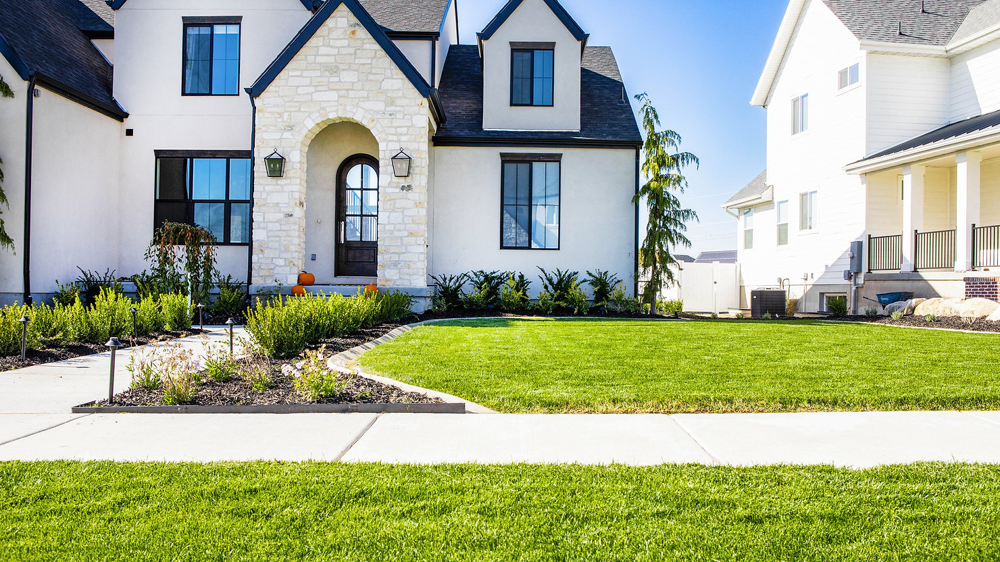

Can Landscape Design Help With Drainage And Erosion Control?

Yes, landscape design can significantly help with drainage and erosion control. Proper landscape planning and implementation can address water runoff, soil displacement, and erosion issues by integrating specific features and techniques designed to manage and redirect water flow. These solutions not only enhance the aesthetic appeal of a property but also contribute to its long-term stability and health.
Landscape design isn't just about creating beautiful outdoor spaces; it's also a powerful tool for managing water and preventing erosion. Proper landscape design can address drainage and erosion control issues, ensuring that your outdoor environment remains functional and attractive. At Ironhills Landscaping, we're dedicated to bringing your outdoor dreams to life while addressing these practical concerns.
Key Takeaways:
French Drains: Effective for redirecting excess water.
Retaining Walls: Prevent soil erosion on slopes.
Swales and Dry Creek Beds: Guide water away from problem areas.
Rain Gardens: Eco-friendly stormwater management.
Proper Grading: Facilitates efficient water management.
Appropriate Plant Selection: Reduces erosion and need for irrigation.
Mulching: Improves soil retention and prevents erosion.
Permeable Surfaces: Enhances water absorption.
Erosion Control Blankets: Stabilizes soil on steep slopes.
Effective Grading Techniques for Landscape Drainage
Proper grading is essential in landscape design for effective water management and the prevention of erosion and flooding. By implementing the right grading techniques, you can ensure that water is directed away from your home and other structures, maintaining the integrity and beauty of your landscape.
Key Grading Techniques:
1. Slope Away from Structures
Ensure a gentle slope from structures such as your home, garage, or shed. This helps direct water away from foundations, preventing water damage and potential structural issues.
2. Swales
Swales are shallow, sloped trenches that can be filled with grass, gravel, or other vegetation. They effectively channel water away from high-traffic areas and structures, guiding it to designated drainage points.
3. French Drains
A French drain is a trench filled with gravel or rock containing a perforated pipe that redirects surface water and groundwater away from an area. This technique is particularly useful for areas with poor natural drainage.
4. Terracing
For properties with steep slopes, terracing involves creating a series of step-like levels. This not only reduces the speed of water runoff but also provides flat areas for planting and other landscape features.
5. Retaining Walls
Retaining walls can be used to create level areas on slopes and to hold back soil, which helps manage runoff and prevents erosion. They are particularly useful in preventing the downward movement of soil and water.
6. Proper Soil Compaction
Ensuring that the soil is adequately compacted helps prevent uneven settling and promotes effective water runoff. However, avoid over-compaction, as this can hinder proper drainage.
7. Vegetative Buffers
Planting grasses, shrubs, and other vegetation along slopes and around drainage areas helps absorb water and stabilize soil, reducing erosion and promoting natural water infiltration.
8. Rain Gardens
A rain garden is a shallow, planted depression designed to absorb rainwater runoff from impervious areas such as roofs and driveways. This technique helps manage runoff and promotes groundwater recharge.
9. Surface Grading
Surface grading involves shaping the ground to create a specific slope and directing water flow. This can include creating berms (raised areas) to divert water away from critical zones.
By implementing these effective grading techniques, you can ensure that your landscape is well-prepared to handle water runoff and prevent erosion. Proper grading not only protects your property but also enhances the overall health and appearance of your outdoor space.
Benefits of Installing French Drains
French drains are a highly effective solution for managing water drainage issues on your property. By installing a system of perforated pipes surrounded by gravel, you can redirect excess water away from problem areas. This helps prevent flooding and water damage to your home and landscape. French drains are especially beneficial in areas with heavy rainfall or poor natural drainage. They can be installed in various configurations to suit the specific needs of your property, ensuring that water is effectively managed and your landscape remains healthy and functional.
The Role of Retaining Walls in Erosion Control
Retaining walls are essential for properties with slopes or uneven terrain. These structures act as barriers that hold back soil and prevent it from being washed away during heavy rains. By managing water runoff, retaining walls help control erosion and maintain the integrity of your landscape. They can be constructed from various materials, including stone, concrete, and wood, to complement the aesthetic of your outdoor space. In addition to their practical benefits, retaining walls can add visual interest and structure to your landscape design, enhancing its overall appeal.
How Swales and Dry Creek Beds Enhance Drainage
Swales and dry creek beds are natural-looking solutions for managing water flow and controlling erosion. Swales are shallow, sloped trenches filled with rocks or vegetation that guide water away from problem areas. Dry creek beds mimic natural waterways, directing excess water through your landscape and allowing it to infiltrate the ground gradually. These features not only solve drainage issues but also add beauty and texture to your outdoor space. They can be integrated into various landscape designs, providing both functional and aesthetic benefits.
Creating Eco-Friendly Rain Gardens
Rain gardens are shallow depressions planted with water-tolerant and native plants. They capture and absorb stormwater, allowing it to naturally infiltrate the ground. This eco-friendly solution reduces runoff, filters pollutants, and enhances the biodiversity of your landscape. Rain gardens can be customized to fit any size or style of garden, making them a versatile addition to your landscape design. By incorporating rain gardens, you can contribute to environmental sustainability while improving the health and beauty of your outdoor space.
The Importance of Proper Grading in Landscape Design
Proper grading is crucial for effective water management in landscape design. Ensuring a gentle slope away from your home's foundation and hardscapes facilitates efficient water drainage and prevents water damage. Grading helps direct water flow to designated areas, such as French drains, swales, or rain gardens, where it can be properly managed. This process not only protects your property from potential water damage but also promotes a healthier and more stable landscape. Proper grading is a fundamental aspect of landscape design that contributes to the overall functionality and longevity of your outdoor space.
FAQs
What is the best way to manage water drainage in my yard?
Installing French drains, swales, and proper grading are effective methods for managing water drainage.
How can I prevent soil erosion on my property?
Using retaining walls, mulching, and planting appropriate vegetation are key strategies to prevent soil erosion.
What are the benefits of a rain garden?
Rain gardens capture stormwater, reduce runoff, filter pollutants, and enhance landscape biodiversity.
Are permeable surfaces effective for water management?
Yes, permeable surfaces like gravel and pavers enhance water absorption and reduce surface runoff.
What plants are best for erosion control?
Native and water-tolerant plants, as well as those with deep root systems, are best for erosion control.
Transform Your Landscape with Ironhills Landscaping
At Ironhills Landscaping, we believe in the power of thoughtful design to transform your outdoor space into a functional and beautiful haven. By incorporating features like French drains, retaining walls, and rain gardens, we address drainage and erosion control issues, ensuring your landscape remains healthy and vibrant.
Ready to transform your outdoor space and address drainage and erosion issues? Ironhills Landscaping is here to help. Our expert team combines creativity and functionality to design and install landscapes that meet your needs and exceed your expectations. Whether you're dealing with water management problems or simply want to enhance the beauty of your yard, we have the solutions.
Contact us now to schedule a consultation and take the first step towards a stunning and sustainable landscape. Call us today to get started!
Recent Posts


If you live in Lehi, there's a good chance your yard isn't perfectly flat. Newer neighborhoods near Traverse Mountain, homes along the foothills, and lots that step down toward the street all share th